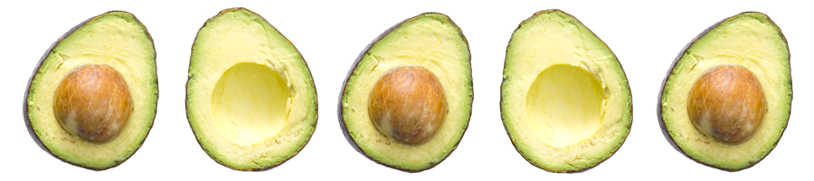
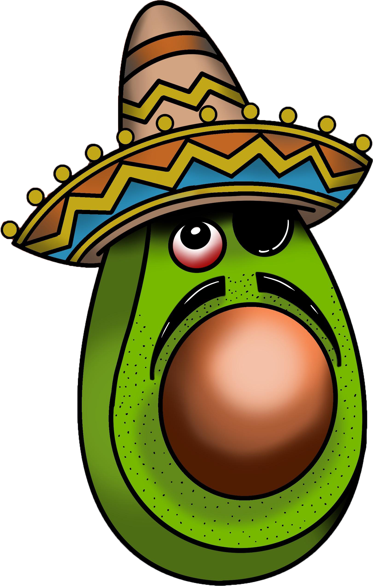
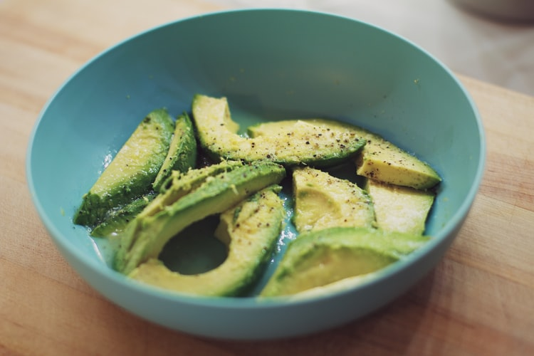

Recently, avocados have been climbing the trendy foods ladder. You can hardly
scroll through social media and not find a picture of the fruit on toast, in a bowl, an animated smiling
avo, avocado desserts and many other treats. A little bit of background to the avocado: it comes from
South America, botanically it’s actually a berry with a single large seed, it’s high in oleic acid
(monosaturated fat), which is quite beneficial for diets low in animal fat. Seeing how popular avocados
are and the abundance of it in the shops and markets, you probably wouldn’t think too much about how it
got there. The truth is, avocados can be quite temperamental to grow. It requires warm weather, but not
too hot, a whole lot of irrigation (2000 litres for 1 kg of the fruit), nutrient rich soil and special
pesticides. It takes ten years, or sometimes more, of this expensive upkeep for an avocado tree to give
fruits!

What shocked me the most was something else. Turns out, the avo is on it’s way
to become the next ‘conflict commodity’ similar to the ‘blood diamonds’ as it’s the fuel of
organised crime in Mexico. The growth in demand and profitability of the avocado export from Mexico
to the US, combined with emerging issues in the drug trade, attracted the attention of cartels. Some
offer ‘services’ such as protection to the avocado growers, while some kidnap plantation owners and
demand ransom money. In the series ‘Rotten’ on Netflix, I heard the story of Manuel Lucatero. In
1998 he was working for a large- scale avocado growers in Michoacan. The Michoacan area is the
largest exporter of the ‘green gold’ with about a third of the export to the US coming from this
area. One day he was going with the owner to inspect the orchards when they were stopped by a car
and kidnapped.
Thankfully, the families managed to pay off the cartel and Manuel was released. But the story doesn’t end
there. Several years later, after power- shift and the emerge of new cartels, Manuels’ brother and
father were kidnapped as well. This time, the kidnappers were asking for 10 million pesos! Manuel had to
borrow money and sell part of his lands to cover, money that he still pays off to this day.
And while you not buying and avocado for your breakfast may not change much,
shedding light on stories like these might lead to a change in the near future. For example, a few
cafes
in the UK have taken avocado off their menus in the hopes of raising awareness towards the issues in
the
food industry. Nobody knows what will happen, however, this author thinks changes are on the horizon
for
the ‘green gold’.
